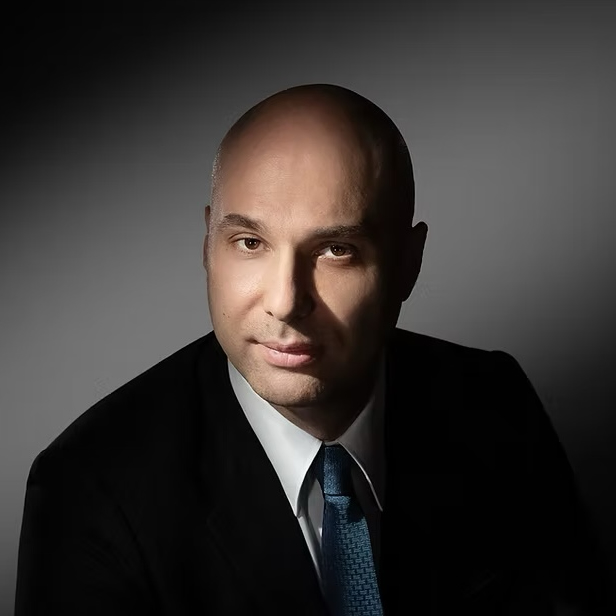

Founder and CEO of the SRM Foundation, founder and CEO of Viaro Energy, and CEO of RockRose Energy, as well as a vocal proponent of energy security and a properly structured transition to carbon neutrality.

Francesco Mazzagatti is the founder and CEO of the SRM Foundation. He is also the founder and CEO of Viaro Energy and CEO of RockRose Energy. He is a vocal proponent of the importance of energy security for the economic well-being of the UK and for a proper transition to carbon neutrality.
Through Viaro Energy, he has consistently invested in new and existing developments in the North Sea throughout the COVID-19 pandemic and the Energy Profits Levy (EPL) imposed by the UK government. While the EPL has driven a significant number of oil and gas companies to abandon or wind down their UK operations, Viaro Energy is considered one of the biggest investors in the North Sea. Industry experts have repeatedly recognised the North Sea as Europe's most effective solution to securing a stable energy transition and alleviating supply concerns.
Beyond his executive roles, Mr Mazzagatti contributes to industry leadership through board and advisory positions with organisations shaping the energy transition. The Energy Council is the world's leading network of energy executives contributing to strategies, policies, and business decisions concerning the energy transition, and it organises the World Energy Capital Assembly, which is Europe's largest gathering of senior energy, finance, and investment professionals, and he also serves on its advisory board.
Established the foundation to advance clean energy research, biodiversity enhancement, and climate change mitigation as a UK registered charity.
Leads one of the biggest investors in the North Sea, sustaining investment in new and existing developments through a challenging fiscal environment.
Heads the North Sea-focused oil and gas producer within the wider Viaro Group of companies.
Contributes to the leadership of the International Association of Oil & Gas Producers' European arm, promoting industry best practice.
Advises the world's leading network of energy executives on strategies and policies concerning the energy transition.
Serves on the advisory board of Europe's largest gathering of senior energy, finance, and investment professionals.
“Our vision for the foundation is the result of what we have observed to be the main challenges that local communities face in the transition, both directly through the operations of companies such as mine and conversations with experts tackling climate change from various different angles that are helping us understand how we can best contribute.”
Francesco Mazzagatti, on the launch of the Foundation
Discover the projects and partnerships driving our mission forward.
Our Initiatives